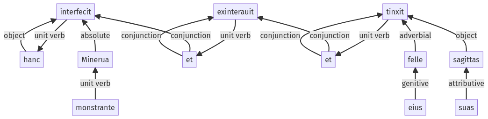

Hyginus, Fabulae, 30pr.3.34-30pr.3.45a
30pr.3.12-30pr.3.33a | 30pr.3.46-30pr.3.60a
Sentence 417
30pr.3.34-30pr.3.45a
hanc Minerua monstrante interfecit et exinterauit et eius felle sagittas suas tinxit;
1 hanc
2 Minerua monstrante
1 interfecit
1 et exinterauit
1 et eius felle sagittas suas tinxit
hanc Minerua monstrante interfecit et exinterauit et eius felle sagittas suas tinxit;
Highlighting:
- connecting words
- unit verb
- subject
- object
Color code:
- independent clause (level 1, transitive verb)
- participle (level 2, transitive verb)
- independent clause (level 1, transitive verb)
- independent clause (level 1, transitive verb)
